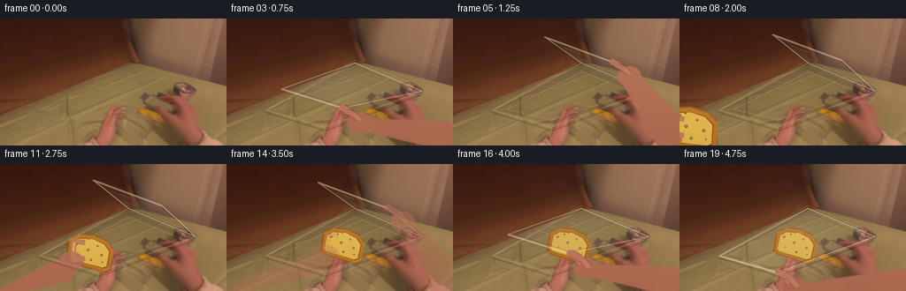
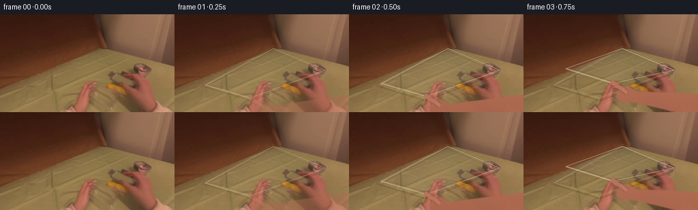
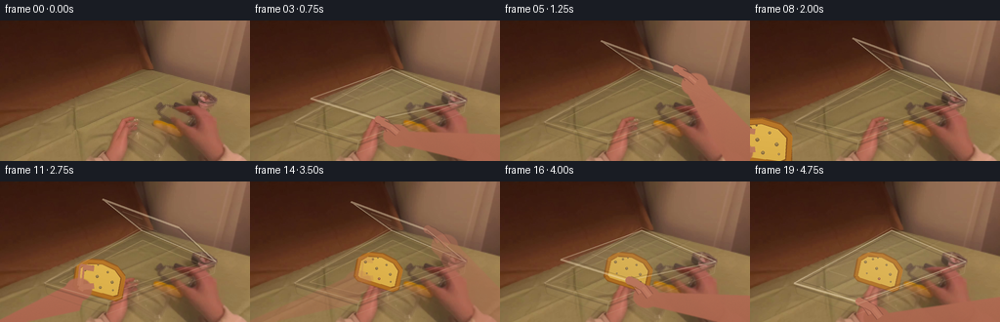

CODING AGENTS AS PIXEL WORLD MODELS
traex/GPT-5.6-Sol · common50_0013
点击播放 · 原生 RGB 像素
逐轮保存的候选
回放视频、检查图与代码变化。
每份候选均可单独播放。实际图片检查记录在下方工具轨迹中。
候选 01播放与检查图
点击播放 · 原生 RGB 像素


展开代码变化
--- 上一保存版本
+++ 本次保存版本
@@ -0,0 +1,257 @@
+from pathlib import Path
+import math
+import numpy as np
+from PIL import Image, ImageDraw, ImageFilter
+import artifact_io
+
+CASE = Path(__file__).resolve().parent
+W, H, N = 256, 144, 20
+S = 3
+rng = np.random.default_rng(1301)
+
+
+def clamp01(x): return max(0.0, min(1.0, x))
+def smooth(x):
+ x = clamp01(x)
+ return x*x*(3.0-2.0*x)
+def lerp(a,b,t): return a+(b-a)*t
+
+def rgba_layer(): return Image.new('RGBA',(W*S,H*S),(0,0,0,0))
+def ptscale(points): return [(int(round(x*S)),int(round(y*S))) for x,y in points]
+
+def overlay_poly(im, points, fill, outline=None, width=1, blur=0):
+ lay=rgba_layer(); d=ImageDraw.Draw(lay,'RGBA')
+ d.polygon(ptscale(points), fill=fill)
+ if outline:
+ d.line(ptscale(points+[points[0]]),fill=outline,width=max(1,int(width*S)),joint='curve')
+ if blur: lay=lay.filter(ImageFilter.GaussianBlur(blur*S))
+ return Image.alpha_composite(im,lay)
+
+def line_layer(im, points, fill, width, blur=0):
+ lay=rgba_layer(); d=ImageDraw.Draw(lay,'RGBA')
+ d.line(ptscale(points),fill=fill,width=max(1,int(width*S)),joint='curve')
+ for p in (points[0],points[-1]):
+ x,y=p; r=width/2
+ d.ellipse((int((x-r)*S),int((y-r)*S),int((x+r)*S),int((y+r)*S)),fill=fill)
+ if blur: lay=lay.filter(ImageFilter.GaussianBlur(blur*S))
+ return Image.alpha_composite(im,lay)
+
+def draw_rim(im, strength=1.0):
+ # The source image already contains this perspective rim. These restrained
+ # highlights keep it readable as hands and food cross it.
+ A=(45,104); B=(145,50); C=(221,82); D=(111,123)
+ q=[A,B,C,D]
+ lay=rgba_layer(); dr=ImageDraw.Draw(lay,'RGBA')
+ a=int(105*strength)
+ dr.line(ptscale(q+[A]),fill=(221,198,158,a),width=1*S,joint='curve')
+ dr.line(ptscale([(47,107),(112,127),(220,86)]),fill=(61,42,31,int(72*strength)),width=2*S,joint='curve')
+ dr.line(ptscale([(49,101),(145,47),(221,79)]),fill=(242,214,172,int(55*strength)),width=1*S,joint='curve')
+ # near wall lower edge
+ dr.line(ptscale([(45,104),(48,115),(109,136),(111,123)]),fill=(92,68,49,int(50*strength)),width=1*S)
+ dr.line(ptscale([(111,123),(109,136),(219,94),(221,82)]),fill=(225,203,169,int(38*strength)),width=1*S)
+ return Image.alpha_composite(im,lay)
+
+def draw_cavity(im, openness):
+ if openness <= 0.01: return im
+ A=(48,103); B=(145,53); C=(217,83); D=(111,120)
+ # soft dark cavity and inner bottom, both transparent enough to retain source
+ lay=rgba_layer(); dr=ImageDraw.Draw(lay,'RGBA')
+ dr.polygon(ptscale([A,B,C,D]), fill=(47,37,28,int(38*openness)))
+ inner=[(61,103),(146,60),(204,84),(111,115)]
+ dr.polygon(ptscale(inner),fill=(59,46,30,int(22*openness)))
+ dr.line(ptscale(inner+[inner[0]]),fill=(226,202,157,int(46*openness)),width=S)
+ return Image.alpha_composite(im,lay)
+
+def lid_quad(op):
+ # Far edge B-C is the hinge. The near edge rises and recedes in projection.
+ e=smooth(op)
+ A=(lerp(45,105,e),lerp(104,18,e))
+ D=(lerp(111,183,e),lerp(123,47,e))
+ return [A,(145,50),(221,82),D]
+
+def draw_lid(im, op, strength=1.0):
+ q=lid_quad(op); e=smooth(op)
+ # cast shadow only while lid is away from the bowl
+ if e>0.03:
+ sh=[(x+4+3*e,y+5+2*e) for x,y in q]
+ lay=rgba_layer(); dr=ImageDraw.Draw(lay,'RGBA')
+ dr.polygon(ptscale(sh),fill=(27,19,16,int(30*e*strength)))
+ lay=lay.filter(ImageFilter.GaussianBlur(3*S))
+ im=Image.alpha_composite(im,lay)
+ lay=rgba_layer(); dr=ImageDraw.Draw(lay,'RGBA')
+ # subtle warm transparent plastic panel
+ dr.polygon(ptscale(q),fill=(207,193,169,int((12+13*(1-e))*strength)))
+ alpha=int(135*strength)
+ dr.line(ptscale(q+[q[0]]),fill=(227,210,177,alpha),width=1*S,joint='curve')
+ # parallel raised seal and molded ridge
+ centroid=np.mean(np.array(q),axis=0)
+ qi=[]
+ for x,y in q:
+ qi.append((lerp(x,centroid[0],.09),lerp(y,centroid[1],.09)))
+ dr.line(ptscale(qi+[qi[0]]),fill=(89,71,57,int(75*strength)),width=S,joint='curve')
+ dr.line(ptscale([q[0],q[3]]),fill=(246,226,188,int(115*strength)),width=2*S)
+ # short specular streaks preserve the clear-plastic reading
+ p0=np.array(q[0]); p1=np.array(q[1]); p2=np.array(q[2]); p3=np.array(q[3])
+ for u,al in [(.28,46),(.66,34)]:
+ x1,y1=(p0*(1-u)+p1*u); x2,y2=(p3*(1-u)+p2*u)
+ m1=(lerp(x1,x2,.12),lerp(y1,y2,.12)); m2=(lerp(x1,x2,.38),lerp(y1,y2,.38))
+ dr.line(ptscale([m1,m2]),fill=(250,233,202,int(al*strength)),width=S)
+ return Image.alpha_composite(im,lay)
+
+def skin_gradient_mask(polys, ellipses, alpha=255, blur=.45):
+ mask=Image.new('L',(W*S,H*S),0); d=ImageDraw.Draw(mask)
+ for p in polys: d.polygon(ptscale(p),fill=alpha)
+ for x0,y0,x1,y1 in ellipses: d.ellipse((int(x0*S),int(y0*S),int(x1*S),int(y1*S)),fill=alpha)
+ if blur: mask=mask.filter(ImageFilter.GaussianBlur(blur*S))
+ # Warm directional gradient + quiet pore-scale variation.
+ yy,xx=np.mgrid[:H*S,:W*S]
+ noise=rng.normal(0,1.8,(H*S,W*S))
+ r=np.clip(171 + 18*(1-yy/(H*S)) + noise,0,255)
+ g=np.clip(102 + 20*(1-yy/(H*S)) + noise*.45,0,255)
+ b=np.clip(78 + 18*(1-yy/(H*S)) + noise*.30,0,255)
+ arr=np.dstack([r,g,b,np.array(mask)]).astype(np.uint8)
+ return Image.fromarray(arr,'RGBA')
+
+def draw_right_hand(im, contact, amount, press=False):
+ if amount<=.01: return im
+ cx,cy=contact
+ # Palm/forearm is first-person, entering from the lower right.
+ palm=(cx+18,cy+15)
+ polys=[[(258,146),(232,146),(palm[0]-8,palm[1]+8),(palm[0]+10,palm[1]-3),(263,117)]]
+ ell=[(palm[0]-13,palm[1]-10,palm[0]+14,palm[1]+13)]
+ hand=skin_gradient_mask(polys,ell,int(245*amount),.5)
+ im=Image.alpha_composite(im,hand)
+ # Two articulated fingertips pinch/later press the near plastic edge.
+ lay=rgba_layer(); dr=ImageDraw.Draw(lay,'RGBA')
+ col=(184,115,91,int(245*amount)); hi=(222,153,124,int(90*amount)); sh=(107,59,49,int(95*amount))
+ if press:
+ paths=[[(palm[0]-4,palm[1]-3),(cx+8,cy+3),(cx+1,cy)],
+ [(palm[0]+4,palm[1]+1),(cx+15,cy+7),(cx+8,cy+3)]]
+ widths=[8,7]
+ else:
+ paths=[[(palm[0]-6,palm[1]-5),(cx+7,cy+3),(cx,cy)],
+ [(palm[0]+2,palm[1]-1),(cx+13,cy+8),(cx+5,cy+4)]]
+ widths=[7,6]
+ for path,w in zip(paths,widths):
+ dr.line(ptscale(path),fill=sh,width=(w+2)*S,joint='curve')
+ dr.line(ptscale(path),fill=col,width=w*S,joint='curve')
+ dr.line(ptscale([path[0],path[1]]),fill=hi,width=max(S,(w-4)*S),joint='curve')
+ x,y=path[-1]; dr.ellipse((int((x-w/2)*S),int((y-w/2)*S),int((x+w/2)*S),int((y+w/2)*S)),fill=col)
+ return Image.alpha_composite(im,lay)
+
+def bread_sprite(scale=1.0, angle=0):
+ sw,sh=84*S,60*S
+ spr=Image.new('RGBA',(sw,sh),(0,0,0,0)); d=ImageDraw.Draw(spr,'RGBA')
+ # Slice silhouette: broad base and softly domed top.
+ outer=[(9*S,50*S),(6*S,25*S),(12*S,15*S),(24*S,8*S),(40*S,5*S),(59*S,8*S),(72*S,17*S),(77*S,48*S),(70*S,54*S),(17*S,55*S)]
+ d.polygon(outer,fill=(137,82,27,255))
+ # rounded crust nodes
+ d.line([(13*S,49*S),(10*S,23*S),(20*S,13*S),(39*S,9*S),(59*S,12*S),(71*S,21*S),(73*S,47*S),(67*S,51*S),(17*S,51*S),(13*S,49*S)],fill=(177,111,32,255),width=5*S,joint='curve')
+ inner=[(15*S,47*S),(13*S,25*S),(20*S,17*S),(39*S,12*S),(57*S,15*S),(67*S,23*S),(69*S,45*S),(64*S,48*S),(19*S,49*S)]
+ d.polygon(inner,fill=(218,174,72,255))
+ # directional baked gradient
+ arr=np.array(spr).astype(np.int16)
+ y=np.arange(sh)[:,None]
+ light=(9-10*y/max(1,sh-1)).astype(np.int16)
+ arr[:,:,:3]=np.clip(arr[:,:,:3]+light[:,:,None]*(arr[:,:,3:4]>0),0,255)
+ spr=Image.fromarray(arr.astype(np.uint8),'RGBA')
+ d=ImageDraw.Draw(spr,'RGBA')
+ pores=[(19,25,2),(28,18,1.5),(37,29,2),(49,20,1.5),(58,31,2),(26,40,1.3),(45,42,1.8),(62,41,1.2),(34,14,1)]
+ for x,y0,r in pores:
+ d.ellipse(((x-r)*S,(y0-r)*S,(x+r)*S,(y0+r)*S),fill=(129,91,40,70))
+ d.ellipse(((x-r*.6)*S,(y0-r*.8)*S,(x+r*.5)*S,(y0+r*.3)*S),fill=(238,201,103,70))
+ if scale!=1:
+ spr=spr.resize((max(1,int(sw*scale)),max(1,int(sh*scale))),Image.Resampling.LANCZOS)
+ return spr.rotate(angle,Image.Resampling.BICUBIC,expand=True)
+
+def paste_center(im, sprite, center, opacity=1.0):
+ if opacity<.999:
+ a=np.array(sprite)
+ a[:,:,3]=(a[:,:,3].astype(float)*opacity).astype(np.uint8)
+ sprite=Image.fromarray(a,'RGBA')
+ x=int(center[0]*S-sprite.width/2); y=int(center[1]*S-sprite.height/2)
+ lay=rgba_layer(); lay.alpha_composite(sprite,(x,y))
+ return Image.alpha_composite(im,lay)
+
+def draw_left_hand(im, center, amount, over=False):
+ if amount<=.01:return im
+ cx,cy=center
+ wrist=(cx-30,cy+25); palm=(cx-23,cy+10)
+ polys=[[(-8,146),(15,146),(wrist[0]+8,wrist[1]+8),(palm[0]+10,palm[1]-5),(palm[0]-8,palm[1]-4)]]
+ ell=[(palm[0]-13,palm[1]-10,palm[0]+14,palm[1]+13)]
+ hand=skin_gradient_mask(polys,ell,int(235*amount),.55)
+ im=Image.alpha_composite(im,hand)
+ if over:
+ lay=rgba_layer(); dr=ImageDraw.Draw(lay,'RGBA')
+ col=(187,119,91,int(240*amount)); hi=(224,154,121,int(65*amount))
+ for off in [-12,9]:
+ p=[(palm[0]+2,palm[1]+off*.2),(cx-19,cy+off),(cx-7,cy+off*.85)]
+ dr.line(ptscale(p),fill=col,width=6*S,joint='curve')
+ dr.line(ptscale(p[:2]),fill=hi,width=2*S,joint='curve')
+ im=Image.alpha_composite(im,lay)
+ return im
+
+def exposure(base, frame):
+ if frame==0:return base.copy()
+ a=np.array(base).astype(np.int16)
+ # almost imperceptible auto-exposure breathing, common in egocentric capture
+ shift=round(1.3*math.sin(frame*.42))
+ return Image.fromarray(np.clip(a+shift,0,255).astype(np.uint8),'RGB')
+
+
+def generate():
+ src=Image.open(CASE/'first_frame.png').convert('RGB')
+ out=[]
+ for i in range(N):
+ if i==0:
+ out.append(np.array(src,dtype=np.uint8)); continue
+ im=exposure(src,i).resize((W*S,H*S),Image.Resampling.BICUBIC).convert('RGBA')
+ # Lid timeline: open by frame 6, stay open through insertion, close 14-18.
+ if i<=6: op=smooth((i-1)/5)
+ elif i<=13: op=1.0
+ else: op=1-smooth((i-13)/5)
+ intro=smooth(i/3)
+ im=draw_cavity(im,op)
+
+ # Food is carried in during 1.75-3.25 s, then remains in the container.
+ if i>=6:
+ move=smooth((i-6)/7)
+ center=(lerp(-18,133,move),lerp(132,91,move))
+ scale=lerp(1.03,.72,move)
+ angle=lerp(-6,-18,move)
+ hand_amt=smooth((i-5)/2)*(1-smooth((i-12)/3))
+ im=draw_left_hand(im,center,hand_amt,False)
+ bread=bread_sprite(scale,angle)
+ im=paste_center(im,bread,center)
+ im=draw_left_hand(im,center,hand_amt,True)
+ # Once settled, the front wall mildly veils the lower edge of bread.
+ if i>=12:
+ veil=smooth((i-11)/2)
+ im=overlay_poly(im,[(48,103),(111,123),(217,83),(213,91),(109,133),(48,113)],
+ (189,174,145,int(13*veil)),None)
+
+ im=draw_rim(im,.38+.42*intro)
+ im=draw_lid(im,op,.35+.65*intro)
+
+ # Opening hand pinches the near-right corner; closing hand returns to press.
+ q=lid_quad(op); contact=q[3]
+ if i<=7:
+ amt=smooth(i/2)*(1-smooth((i-6)/2))
+ im=draw_right_hand(im,contact,amt,False)
+ elif i>=13:
+ amt=smooth((i-13)/2)
+ im=draw_right_hand(im,contact,amt,True)
+ if i==19:
+ # final latch compression cue
+ im=line_layer(im,[(73,108),(111,125),(196,93)],(242,217,179,70),1)
+
+ # Downsample all synthetic edges together for stable antialiasing.
+ frame=np.array(im.convert('RGB').resize((W,H),Image.Resampling.LANCZOS),dtype=np.uint8)
+ out.append(frame)
+ frames=np.stack(out)
+ assert frames.shape==(20,144,256,3) and frames.dtype==np.uint8
+ assert np.array_equal(frames[0],np.array(src,dtype=np.uint8))
+ artifact_io.save(frames,CASE)
+
+if __name__=='__main__':
+ generate()
候选 02播放与检查图
点击播放 · 原生 RGB 像素

展开代码变化
--- 上一保存版本
+++ 本次保存版本
@@ -8,6 +8,7 @@
W, H, N = 256, 144, 20
S = 3
rng = np.random.default_rng(1301)
+SKIN_NOISE = rng.normal(0, 1.8, (H*S, W*S))
def clamp01(x): return max(0.0, min(1.0, x))
@@ -105,7 +106,8 @@
if blur: mask=mask.filter(ImageFilter.GaussianBlur(blur*S))
# Warm directional gradient + quiet pore-scale variation.
yy,xx=np.mgrid[:H*S,:W*S]
- noise=rng.normal(0,1.8,(H*S,W*S))
+ # Screen-anchored fine texture avoids temporal shimmer while the silhouette moves.
+ noise=SKIN_NOISE
r=np.clip(171 + 18*(1-yy/(H*S)) + noise,0,255)
g=np.clip(102 + 20*(1-yy/(H*S)) + noise*.45,0,255)
b=np.clip(78 + 18*(1-yy/(H*S)) + noise*.30,0,255)
@@ -192,11 +194,8 @@
return im
def exposure(base, frame):
- if frame==0:return base.copy()
- a=np.array(base).astype(np.int16)
- # almost imperceptible auto-exposure breathing, common in egocentric capture
- shift=round(1.3*math.sin(frame*.42))
- return Image.fromarray(np.clip(a+shift,0,255).astype(np.uint8),'RGB')
+ # Keep the observed scene untouched outside of the manipulated objects.
+ return base.copy()
def generate():
可观测工具轨迹
实际执行的命令与返回图片。
命令 1exit 0
/bin/bash -lc "cat prompt.txt && printf '\\n---RULES---\\n' && cat GENERATION_RULES.md"
命令 2exit 0
/bin/bash -lc "find . -maxdepth 2 -type f -printf '%p %s bytes\\n' | sort"
命令 3exit 0
/bin/bash -lc "cat task_spec.json; sed -n '1,260p' artifact_io.py"
命令 4exit 0
/bin/bash -lc "python - <<'PY'
from PIL import Image
import numpy as np
im=np.array(Image.open('first_frame.png').convert('RGB'))
print(im.shape,im.dtype, im.min(),im.max())
# quadrant means/std
for y in range(0,144,24):
print('row',y,[(tuple(im[y:y+24,x:x+32].mean((0,1)).round().astype(int)), tuple(im[y:y+24,x:x+32].std((0,1)).round().astype(int))) for x in range(0,256,32)])
# common colors quantized 16
q=(im//16)*16
u,c=np.unique(q.reshape(-1,3),axis=0,return_counts=True)
for i in np.argsort(c)[-30:][::-1]: print(tuple(u[i]), c[i])
PY"命令 5exit 0
/bin/bash -lc "python - <<'PY'
from PIL import Image
import numpy as np
im=np.array(Image.open('first_frame.png').convert('RGB'))
# avg blocks 4x4, classify hue/luminance into chars
s=im.reshape(36,4,64,4,3).mean((1,3))
chars=' .:-=+*#%@'
lum=(.2126*s[:,:,0]+.7152*s[:,:,1]+.0722*s[:,:,2])
print('LUMINANCE')
for row in lum:
print(''.join(chars[min(9,int(v/216*10))] for v in row))
# Sobel-ish gradient of block colors
print('\\nEDGE')
g=np.zeros((36,64)); g[:,1:]=np.linalg.norm(s[:,1:]-s[:,:-1],axis=2); q=np.zeros_like(g);q[1:]=np.linalg.norm(s[1:]-s[:-1],axis=2);g+=q
for row in g:
print(''.join(chars[min(9,int(v/8))] for v in row))
# hue classes based on normalized color relative
print('\\nCOLOR RGB dominance / brightness')
for row in s:
out=''
for r,g,b in row:
mx=max(r,g,b); mn=min(r,g,b); L=(r+g+b)/3
if L<35:c='k'
elif r>g*1.45 and r>b*1.7: c='R' if L>90 else 'r'
elif r>g*1.2 and g>b*1.2:c='O' if L>100 else 'o'
elif r>g*1.05 and g>b*1.25:c='Y' if L>110 else 'y'
elif mx-mn<15:c='W' if L>120 else 'n'
else:c='b'
out+=c
print(out)
PY"命令 6exit 1
/bin/bash -lc "python - <<'PY'
import cv2,numpy as np
from PIL import Image
im=np.array(Image.open('first_frame.png').convert('RGB'))
# kmeans RGB+weak xy
h,w=im.shape[:2]; yy,xx=np.mgrid[:h,:w]
for k in [8,12,16]:
X=np.c_[im.reshape(-1,3).astype(np.float32),xx.ravel()[:,None]*.12,yy.ravel()[:,None]*.12]
_,lab,cen=cv2.kmeans(X,k,None,(cv2.TERM_CRITERIA_EPS+cv2.TERM_CRITERIA_MAX_ITER,60,.2),5,cv2.KMEANS_PP_CENTERS)
lab=lab.reshape(h,w)
print('\\nK',k)
for i in range(k):
ys,xs=np.where(lab==i); c=cen[i]
print(i,'rgb',np.round(c[:3]).astype(int),'n',len(xs),'bbox', (xs.min(),ys.min(),xs.max(),ys.max()),'xymean',np.round([xs.mean(),ys.mean()]).astype(int))
# tiny map dominant block label map symbols
syms='0123456789abcdef'
for by in range(0,h,8):
print(''.join(syms[np.bincount(lab[by:by+8,bx:bx+8].ravel(),minlength=k).argmax()] for bx in range(0,w,8)))
PY"命令 7exit 0
/bin/bash -lc "python - <<'PY'
import cv2,numpy as np
from PIL import Image
im=np.array(Image.open('first_frame.png').convert('RGB'))
h,w=im.shape[:2]; yy,xx=np.mgrid[:h,:w]
for k in [8,12,16]:
X=np.ascontiguousarray(np.column_stack((im.reshape(-1,3).astype(np.float32),xx.ravel().astype(np.float32)*.12,yy.ravel().astype(np.float32)*.12)))
_,lab,cen=cv2.kmeans(X,k,None,(cv2.TERM_CRITERIA_EPS+cv2.TERM_CRITERIA_MAX_ITER,60,.2),5,cv2.KMEANS_PP_CENTERS)
lab=lab.reshape(h,w)
print('\\nK',k)
for i in range(k):
ys,xs=np.where(lab==i); c=cen[i]
print(i,'rgb',np.round(c[:3]).astype(int),'n',len(xs),'bbox', (xs.min(),ys.min(),xs.max(),ys.max()),'xymean',np.round([xs.mean(),ys.mean()]).astype(int))
syms='0123456789abcdef'
for by in range(0,h,8):
print(''.join(syms[np.bincount(lab[by:by+8,bx:bx+8].ravel(),minlength=k).argmax()] for bx in range(0,w,8)))
PY"命令 8exit 0
/bin/bash -lc "python - <<'PY'
import cv2, numpy as np
im=cv2.imread('first_frame.png'); g=cv2.cvtColor(im,cv2.COLOR_BGR2GRAY)
for t in [(10,25),(20,45),(35,70)]:
e=cv2.Canny(g,*t); co,_=cv2.findContours(e,cv2.RETR_LIST,cv2.CHAIN_APPROX_SIMPLE)
print('\\n',t)
for c in sorted(co,key=cv2.contourArea,reverse=True)[:25]:
a=cv2.contourArea(c); p=cv2.arcLength(c,True); x,y,w,h=cv2.boundingRect(c)
eps=cv2.approxPolyDP(c,.03*p,True).reshape(-1,2)
print(round(a),round(p),'bbox',x,y,w,h,'poly',eps.tolist()[:12])
PY"命令 9exit 0
/bin/bash -lc "python - <<'PY'
from PIL import Image
import numpy as np
im=np.array(Image.open('first_frame.png').convert('RGB'))
# print samples every 10 px as hex-ish exact rgb compressed named
for y in range(0,144,12):
print('\\ny=',y)
for x in range(0,256,16):
p=im[y:y+12,x:x+16].mean((0,1)).astype(int)
print(f'{x:3}:{p[0]:02x}{p[1]:02x}{p[2]:02x}',end=' ')
print()
# grayscale gradients detect lines hough
import cv2
G=cv2.cvtColor(im,cv2.COLOR_RGB2GRAY)
e=cv2.Canny(G,10,30)
lines=cv2.HoughLinesP(e,1,np.pi/360,threshold=25,minLineLength=18,maxLineGap=8)
print('\\nLINES')
for l in sorted(lines[:,0].tolist(),key=lambda z:-((z[2]-z[0])**2+(z[3]-z[1])**2))[:80]:
print(l, 'len',round(np.hypot(l[2]-l[0],l[3]-l[1]),1),'angle',round(np.degrees(np.arctan2(l[3]-l[1],l[2]-l[0])),1))
PY"命令 10exit 0
/bin/bash -lc "cat > generate.py <<'PY'
from pathlib import Path
import math
import numpy as np
from PIL import Image, ImageDraw, ImageFilter
import artifact_io
CASE = Path(__file__).resolve().parent
W, H, N = 256, 144, 20
S = 3
rng = np.random.default_rng(1301)
def clamp01(x): return max(0.0, min(1.0, x))
def smooth(x):
x = clamp01(x)
return x*x*(3.0-2.0*x)
def lerp(a,b,t): return a+(b-a)*t
def rgba_layer(): return Image.new('RGBA',(W*S,H*S),(0,0,0,0))
def ptscale(points): return [(int(round(x*S)),int(round(y*S))) for x,y in points]
def overlay_poly(im, points, fill, outline=None, width=1, blur=0):
lay=rgba_layer(); d=ImageDraw.Draw(lay,'RGBA')
d.polygon(ptscale(points), fill=fill)
if outline:
d.line(ptscale(points+[points[0]]),fill=outline,width=max(1,int(width*S)),joint='curve')
if blur: lay=lay.filter(ImageFilter.GaussianBlur(blur*S))
return Image.alpha_composite(im,lay)
def line_layer(im, points, fill, width, blur=0):
lay=rgba_layer(); d=ImageDraw.Draw(lay,'RGBA')
d.line(ptscale(points),fill=fill,width=max(1,int(width*S)),joint='curve')
for p in (points[0],points[-1]):
x,y=p; r=width/2
d.ellipse((int((x-r)*S),int((y-r)*S),int((x+r)*S),int((y+r)*S)),fill=fill)
if blur: lay=lay.filter(ImageFilter.GaussianBlur(blur*S))
return Image.alpha_composite(im,lay)
def draw_rim(im, strength=1.0):
# The source image already contains this perspective rim. These restrained
# highlights keep it readable as hands and food cross it.
A=(45,104); B=(145,50); C=(221,82); D=(111,123)
q=[A,B,C,D]
lay=rgba_layer(); dr=ImageDraw.Draw(lay,'RGBA')
a=int(105*strength)
dr.line(ptscale(q+[A]),fill=(221,198,158,a),width=1*S,joint='curve')
dr.line(ptscale([(47,107),(112,127),(220,86)]),fill=(61,42,31,int(72*strength)),width=2*S,joint='curve')
dr.line(ptscale([(49,101),(145,47),(221,79)]),fill=(242,214,172,int(55*strength)),width=1*S,joint='curve')
# near wall lower edge
dr.line(ptscale([(45,104),(48,115),(109,136),(111,123)]),fill=(92,68,49,int(50*strength)),width=1*S)
dr.line(ptscale([(111,123),(109,136),(219,94),(221,82)]),fill=(225,203,169,int(38*strength)),width=1*S)
return Image.alpha_composite(im,lay)
def draw_cavity(im, openness):
if openness <= 0.01: return im
A=(48,103); B=(145,53); C=(217,83); D=(111,120)
# soft dark cavity and inner bottom, both transparent enough to retain source
lay=rgba_layer(); dr=ImageDraw.Draw(lay,'RGBA')
dr.polygon(ptscale([A,B,C,D]), fill=(47,37,28,int(38*openness)))
inner=[(61,103),(146,60),(204,84),(111,115)]
dr.polygon(ptscale(inner),fill=(59,46,30,int(22*openness)))
dr.line(ptscale(inner+[inner[0]]),fill=(226,202,157,int(46*openness)),width=S)
return Image.alpha_composite(im,lay)
def lid_quad(op):
# Far edge B-C is the hinge. The near edge rises and recedes in projection.
e=smooth(op)
A=(lerp(45,105,e),lerp(104,18,e))
D=(lerp(111,183,e),lerp(123,47,e))
return [A,(145,50),(221,82),D]
def draw_lid(im, op, strength=1.0):
q=lid_quad(op); e=smooth(op)
# cast shadow only while lid is away from the bowl
if e>0.03:
sh=[(x+4+3*e,y+5+2*e) for x,y in q]
lay=rgba_layer(); dr=ImageDraw.Draw(lay,'RGBA')
dr.polygon(ptscale(sh),fill=(27,19,16,int(30*e*strength)))
lay=lay.filter(ImageFilter.GaussianBlur(3*S))
im=Image.alpha_composite(im,lay)
lay=rgba_layer(); dr=ImageDraw.Draw(lay,'RGBA')
# subtle warm transparent plastic panel
dr.polygon(ptscale(q),fill=(207,193,169,int((12+13*(1-e))*strength)))
alpha=int(135*strength)
dr.line(ptscale(q+[q[0]]),fill=(227,210,177,alpha),width=1*S,joint='curve')
# parallel raised seal and molded ridge
centroid=np.mean(np.array(q),axis=0)
qi=[]
for x,y in q:
qi.append((lerp(x,centroid[0],.09),lerp(y,centroid[1],.09)))
dr.line(ptscale(qi+[qi[0]]),fill=(89,71,57,int(75*strength)),width=S,joint='curve')
dr.line(ptscale([q[0],q[3]]),fill=(246,226,188,int(115*strength)),width=2*S)
# short specular streaks preserve the clear-plastic reading
p0=np.array(q[0]); p1=np.array(q[1]); p2=np.array(q[2]); p3=np.array(q[3])
for u,al in [(.28,46),(.66,34)]:
x1,y1=(p0*(1-u)+p1*u); x2,y2=(p3*(1-u)+p2*u)
m1=(lerp(x1,x2,.12),lerp(y1,y2,.12)); m2=(lerp(x1,x2,.38),lerp(y1,y2,.38))
dr.line(ptscale([m1,m2]),fill=(250,233,202,int(al*strength)),width=S)
return Image.alpha_composite(im,lay)
def skin_gradient_mask(polys, ellipses, alpha=255, blur=.45):
mask=Image.new('L',(W*S,H*S),0); d=ImageDraw.Draw(mask)
for p in polys: d.polygon(ptscale(p),fill=alpha)
for x0,y0,x1,y1 in ellipses: d.ellipse((int(x0*S),int(y0*S),int(x1*S),int(y1*S)),fill=alpha)
if blur: mask=mask.filter(ImageFilter.GaussianBlur(blur*S))
# Warm directional gradient + quiet pore-scale variation.
yy,xx=np.mgrid[:H*S,:W*S]
noise=rng.normal(0,1.8,(H*S,W*S))
r=np.clip(171 + 18*(1-yy/(H*S)) + noise,0,255)
g=np.clip(102 + 20*(1-yy/(H*S)) + noise*.45,0,255)
b=np.clip(78 + 18*(1-yy/(H*S)) + noise*.30,0,255)
arr=np.dstack([r,g,b,np.array(mask)]).astype(np.uint8)
return Image.fromarray(arr,'RGBA')
def draw_right_hand(im, contact, amount, press=False):
if amount<=.01: return im
cx,cy=contact
# Palm/forearm is first-person, entering from the lower right.
palm=(cx+18,cy+15)
polys=[[(258,146),(232,146),(palm[0]-8,palm[1]+8),(palm[0]+10,palm[1]-3),(263,117)]]
ell=[(palm[0]-13,palm[1]-10,palm[0]+14,palm[1]+13)]
hand=skin_gradient_mask(polys,ell,int(245*amount),.5)
im=Image.alpha_composite(im,hand)
# Two articulated fingertips pinch/later press the near plastic edge.
lay=rgba_layer(); dr=ImageDraw.Draw(lay,'RGBA')
col=(184,115,91,int(245*amount)); hi=(222,153,124,int(90*amount)); sh=(107,59,49,int(95*amount))
if press:
paths=[[(palm[0]-4,palm[1]-3),(cx+8,cy+3),(cx+1,cy)],
[(palm[0]+4,palm[1]+1),(cx+15,cy+7),(cx+8,cy+3)]]
widths=[8,7]
else:
paths=[[(palm[0]-6,palm[1]-5),(cx+7,cy+3),(cx,cy)],
[(palm[0]+2,palm[1]-1),(cx+13,cy+8),(cx+5,cy+4)]]
widths=[7,6]
for path,w in zip(paths,widths):
dr.line(ptscale(path),fill=sh,width=(w+2)*S,joint='curve')
dr.line(ptscale(path),fill=col,width=w*S,joint='curve')
dr.line(ptscale([path[0],path[1]]),fill=hi,width=max(S,(w-4)*S),joint='curve')
x,y=path[-1]; dr.ellipse((int((x-w/2)*S),int((y-w/2)*S),int((x+w/2)*S),int((y+w/2)*S)),fill=col)
return Image.alpha_composite(im,lay)
def bread_sprite(scale=1.0, angle=0):
sw,sh=84*S,60*S
spr=Image.new('RGBA',(sw,sh),(0,0,0,0)); d=ImageDraw.Draw(spr,'RGBA')
# Slice silhouette: broad base and softly domed top.
outer=[(9*S,50*S),(6*S,25*S),(12*S,15*S),(24*S,8*S),(40*S,5*S),(59*S,8*S),(72*S,17*S),(77*S,48*S),(70*S,54*S),(17*S,55*S)]
d.polygon(outer,fill=(137,82,27,255))
# rounded crust nodes
d.line([(13*S,49*S),(10*S,23*S),(20*S,13*S),(39*S,9*S),(59*S,12*S),(71*S,21*S),(73*S,47*S),(67*S,51*S),(17*S,51*S),(13*S,49*S)],fill=(177,111,32,255),width=5*S,joint='curve')
inner=[(15*S,47*S),(13*S,25*S),(20*S,17*S),(39*S,12*S),(57*S,15*S),(67*S,23*S),(69*S,45*S),(64*S,48*S),(19*S,49*S)]
d.polygon(inner,fill=(218,174,72,255))
# directional baked gradient
arr=np.array(spr).astype(np.int16)
y=np.arange(sh)[:,None]
light=(9-10*y/max(1,sh-1)).astype(np.int16)
arr[:,:,:3]=np.clip(arr[:,:,:3]+light[:,:,None]*(arr[:,:,3:4]>0),0,255)
spr=Image.fromarray(arr.astype(np.uint8),'RGBA')
d=ImageDraw.Draw(spr,'RGBA')
pores=[(19,25,2),(28,18,1.5),(37,29,2),(49,20,1.5),(58,31,2),(26,40,1.3),(45,42,1.8),(62,41,1.2),(34,14,1)]
for x,y0,r in pores:
d.ellipse(((x-r)*S,(y0-r)*S,(x+r)*S,(y0+r)*S),fill=(129,91,40,70))
d.ellipse(((x-r*.6)*S,(y0-r*.8)*S,(x+r*.5)*S,(y0+r*.3)*S),fill=(238,201,103,70))
if scale"'!=1:
spr=spr.resize((max(1,int(sw*scale)),max(1,int(sh*scale))),Image.Resampling.LANCZOS)
return spr.rotate(angle,Image.Resampling.BICUBIC,expand=True)
def paste_center(im, sprite, center, opacity=1.0):
if opacity<.999:
a=np.array(sprite)
a[:,:,3]=(a[:,:,3].astype(float)*opacity).astype(np.uint8)
sprite=Image.fromarray(a,'"'RGBA')
x=int(center[0]*S-sprite.width/2); y=int(center[1]*S-sprite.height/2)
lay=rgba_layer(); lay.alpha_composite(sprite,(x,y))
return Image.alpha_composite(im,lay)
def draw_left_hand(im, center, amount, over=False):
if amount<=.01:return im
cx,cy=center
wrist=(cx-30,cy+25); palm=(cx-23,cy+10)
polys=[[(-8,146),(15,146),(wrist[0]+8,wrist[1]+8),(palm[0]+10,palm[1]-5),(palm[0]-8,palm[1]-4)]]
ell=[(palm[0]-13,palm[1]-10,palm[0]+14,palm[1]+13)]
hand=skin_gradient_mask(polys,ell,int(235*amount),.55)
im=Image.alpha_composite(im,hand)
if over:
lay=rgba_layer(); dr=ImageDraw.Draw(lay,'RGBA')
col=(187,119,91,int(240*amount)); hi=(224,154,121,int(65*amount))
for off in [-12,9]:
p=[(palm[0]+2,palm[1]+off*.2),(cx-19,cy+off),(cx-7,cy+off*.85)]
dr.line(ptscale(p),fill=col,width=6*S,joint='curve')
dr.line(ptscale(p[:2]),fill=hi,width=2*S,joint='curve')
im=Image.alpha_composite(im,lay)
return im
def exposure(base, frame):
if frame==0:return base.copy()
a=np.array(base).astype(np.int16)
# almost imperceptible auto-exposure breathing, common in egocentric capture
shift=round(1.3*math.sin(frame*.42))
return Image.fromarray(np.clip(a+shift,0,255).astype(np.uint8),'RGB')
def generate():
src=Image.open(CASE/'first_frame.png').convert('RGB')
out=[]
for i in range(N):
if i==0:
out.append(np.array(src,dtype=np.uint8)); continue
im=exposure(src,i).resize((W*S,H*S),Image.Resampling.BICUBIC).convert('RGBA')
# Lid timeline: open by frame 6, stay open through insertion, close 14-18.
if i<=6: op=smooth((i-1)/5)
elif i<=13: op=1.0
else: op=1-smooth((i-13)/5)
intro=smooth(i/3)
im=draw_cavity(im,op)
# Food is carried in during 1.75-3.25 s, then remains in the container.
if i>=6:
move=smooth((i-6)/7)
center=(lerp(-18,133,move),lerp(132,91,move))
scale=lerp(1.03,.72,move)
angle=lerp(-6,-18,move)
hand_amt=smooth((i-5)/2)*(1-smooth((i-12)/3))
im=draw_left_hand(im,center,hand_amt,False)
bread=bread_sprite(scale,angle)
im=paste_center(im,bread,center)
im=draw_left_hand(im,center,hand_amt,True)
# Once settled, the front wall mildly veils the lower edge of bread.
if i>=12:
veil=smooth((i-11)/2)
im=overlay_poly(im,[(48,103),(111,123),(217,83),(213,91),(109,133),(48,113)],
(189,174,145,int(13*veil)),None)
im=draw_rim(im,.38+.42*intro)
im=draw_lid(im,op,.35+.65*intro)
# Opening hand pinches the near-right corner; closing hand returns to press.
q=lid_quad(op); contact=q[3]
if i<=7:
amt=smooth(i/2)*(1-smooth((i-6)/2))
im=draw_right_hand(im,contact,amt,False)
elif i>=13:
amt=smooth((i-13)/2)
im=draw_right_hand(im,contact,amt,True)
if i==19:
# final latch compression cue
im=line_layer(im,[(73,108),(111,125),(196,93)],(242,217,179,70),1)
# Downsample all synthetic edges together for stable antialiasing.
frame=np.array(im.convert('RGB').resize((W,H),Image.Resampling.LANCZOS),dtype=np.uint8)
out.append(frame)
frames=np.stack(out)
assert frames.shape==(20,144,256,3) and frames.dtype==np.uint8
assert np.array_equal(frames[0],np.array(src,dtype=np.uint8))
artifact_io.save(frames,CASE)
if __name__=='__main__':
generate()
PY
python generate.py
python - <<'PY'
import numpy as np
from PIL import Image
z=np.load('pixels.npz')['pixels']
print('tensor',z.shape,z.dtype,'files',len(list(__import__('pathlib').Path('frames').glob('*.png'))))
a=np.array(Image.open('first_frame.png').convert('RGB')); b=np.array(Image.open('frames/00.png').convert('RGB'))
print('frame0 exact',np.array_equal(a,b),'delta means')
prev=a
for i in range(1,20):
c=np.array(Image.open(f'frames/{i:02}.png').convert('RGB'))
print(i,round(np.abs(c.astype(int)-prev.astype(int)).mean(),2),round(np.abs(c.astype(int)-a.astype(int)).mean(),2),np.mean(np.any(c"'!=prev,2)).round(3))
prev=c
PY'命令 11exit 0
/bin/bash -lc "python generate.py >/tmp/genlog 2>&1 && python - <<'PY'
import numpy as np
from PIL import Image
A=np.array(Image.open('first_frame.png').convert('RGB'))
print('exact0',np.array_equal(A,np.array(Image.open('frames/00.png'))))
p=A
for i in range(1,20):
c=np.array(Image.open(f'frames/{i:02}.png'))
print(f'{i:02}', 'step',round(np.abs(c.astype(int)-p.astype(int)).mean(),2),'source',round(np.abs(c.astype(int)-A.astype(int)).mean(),2),'changed%',round(np.mean(np.any(c"'!=p,2))*100,1))
p=c
PY
cat /tmp/genlog
git status --short 2>/dev/null || true
ls -lh pixels.npz inspection.png index.html frames/00.png frames/19.png'命令 12exit 0
/bin/bash -lc "python generate.py 2>.tmp/genlog && python - <<'PY'
import numpy as np
from PIL import Image
A=np.array(Image.open('first_frame.png').convert('RGB'))
print('exact0',np.array_equal(A,np.array(Image.open('frames/00.png'))))
p=A
for i in range(1,20):
c=np.array(Image.open(f'frames/{i:02}.png'))
print(f'{i:02}', 'step',round(np.abs(c.astype(int)-p.astype(int)).mean(),2),'source',round(np.abs(c.astype(int)-A.astype(int)).mean(),2),'changed%',round(np.mean(np.any(c"'!=p,2))*100,1))
p=c
PY
cat .tmp/genlog
python -m py_compile generate.py
ls -lh pixels.npz inspection.png index.html frames/00.png frames/19.png'命令 13exit 0
/bin/bash -lc "python - <<'PY'
from PIL import Image
import numpy as np
print('yellow-object tracking (new high-RG warm pixels):')
base=np.array(Image.open('first_frame.png'))
for i in range(20):
a=np.array(Image.open(f'frames/{i:02}.png'))
# bread crumb pixels favor green and brightness compared with source
m=(a[:,:,0]>175)&(a[:,:,1]>125)&(a[:,:,1]>a[:,:,2]*1.55)&(a[:,:,0]>a[:,:,1]*1.08)&(np.max(abs(a.astype(int)-base.astype(int)),2)>15)
y,x=np.where(m)
print(i, int(m.sum()), (round(x.mean(),1),round(y.mean(),1)) if len(x) else '-')
PY"保存候选 2 份；完成命令 13 次；可验证图片返回 0 张。原始 API 响应与完整日志保留在本地。